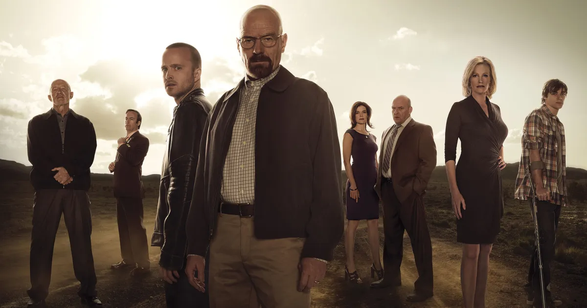

About
Breaking Bad was created by Vince Gilligan, who had spent several years writing the Fox series The X-Files. Gilligan wanted to create a series in which the protagonist became the antagonist. "Television is historically good at keeping its characters in a self-imposed stasis so that shows can go on for years or even decades", he said. "When I realized this, the logical next step was to think, how can I do a show in which the fundamental drive is toward change?" He added that his goal with Walter White was to turn him from Mr. Chips into Scarface. Gilligan believed the concept of showing the full drastic transformation of a character across the run of a television show was a risky concept and would be difficult to pitch without other powerful factors to support it, such as strong cinematography and acting